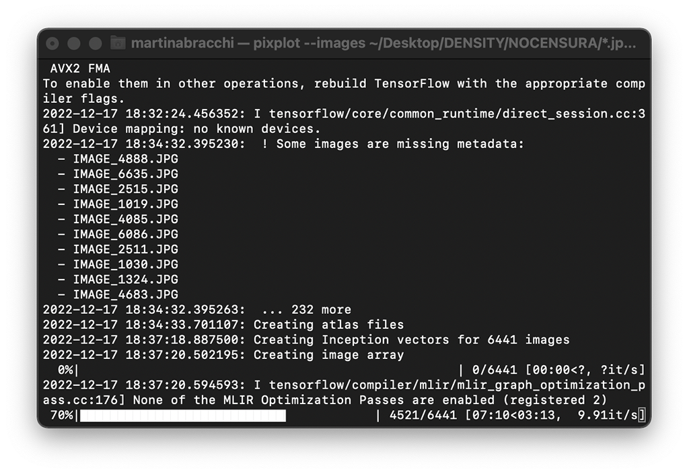

01
WHAT Found in Fast Fashion Factories
WHAT Found in Fast Fashion Factories
collects 6683 photos posted on Google Maps with the addresses of 1000 garment factories around the world.
All the addresses were found in
the list of level 1 (tier 1) suppliers that
have produced for MANGO in 2021.
All the addresses were found in
the list of level 1 (tier 1) suppliers that
have produced for MANGO in 2021.
Invisible values
Invisible labour
02
Fashion is one of the most labour-dependent industries, but many companies have decided
to bypass production completely, by switching
their homeland production with contracted-out manufacturing, especially in low-income countries. In this way, their workforce is not under their responsibility anymore,
as it is the end of a very long supply chain.
This is part of a general tendency
of corporations to “dematerialise” themselves: since the 1990s, many started to shift their focus and investments from production to branding, from objects to ideas.
Regaining

WHY
As brands distanced themselves from the material processes, so have clients. They know the real
value they are paying for is not a tangible product anymore, but the concept it represents.
All of the processes ended up being submerged, making it very hard to imagine that those clothes
were once made by someone, somewhere far away.
By republishing the data uploaded in the factories areas, FFFF makes everyday objects, people
and spaces that are universally familiar accessible
for people to consult. The goal is to get closer to the reality of these places and restore the discarded physicality of the fashion garments industry.
03
HOW Research
HOW Research
We downloaded a list of factories from
the Social Responsability section on shop.mango.com↗*.
These factories are not owned by MANGO
and supply multiple other fashion companies.
the Social Responsability section on shop.mango.com↗*.
These factories are not owned by MANGO
and supply multiple other fashion companies.
We searched all the addresses on Google
Maps and the URLs of those whose position
had been registered.
Maps and the URLs of those whose position
had been registered.

We discovered that more than 400 factories
couldn’t be found on Maps, including 262 Chinese
factories, as it can be seen in the MAP↗.
We scraped all the reviews that were uploaded
at the available locations through Google Maps
Reviews Apify↗.
couldn’t be found on Maps, including 262 Chinese
factories, as it can be seen in the MAP↗.
We scraped all the reviews that were uploaded
at the available locations through Google Maps
Reviews Apify↗.

The new data about the images were merged
together with the data about the factories
and their geolocations.
together with the data about the factories
and their geolocations.
All the images were downloaded by uploading
the dataset on Google Chrome DownloadThemAll!↗
extension. This folder was then cleared from
the images that did not fit into the research topic.
the dataset on Google Chrome DownloadThemAll!↗
extension. This folder was then cleared from
the images that did not fit into the research topic.
03
HOW Design
HOW Design
After we got the final 6683 pictures together,
they were clustered by selecting 16 filters that
we believed could tell more about the photos
and highlight patterns in them.
they were clustered by selecting 16 filters that
we believed could tell more about the photos
and highlight patterns in them.
Since such a big dataset of images is tricky
to manage on a web based platform, we decided
to start from PixPlot↗ as a convenient infrastructure
to build our ATLAS↗.
PixPlot uses a convolutional neural network
to place images near one another in a web browser,
according to visual similarity or geographical data.
It allows users to browse many pictures smoothly
and move through space with zoom-and-pan
interactions that recall Maps.
to manage on a web based platform, we decided
to start from PixPlot↗ as a convenient infrastructure
to build our ATLAS↗.
PixPlot uses a convolutional neural network
to place images near one another in a web browser,
according to visual similarity or geographical data.
It allows users to browse many pictures smoothly
and move through space with zoom-and-pan
interactions that recall Maps.

Before loading them into Pixplot, the data had
to be spatialised according to the selected clusters.
Hence, the dataset was converted into a bipartite
network through table2net↗ and was then
spatialized in Gephi↗ using the algorithms Force
Atlas 2.0, Expansion and Prevent Overlaps.
to be spatialised according to the selected clusters.
Hence, the dataset was converted into a bipartite
network through table2net↗ and was then
spatialized in Gephi↗ using the algorithms Force
Atlas 2.0, Expansion and Prevent Overlaps.

The x,y coordinates of the network’s nodes then
had to be converted into terrestrial coordinates because
the only way to obtain a custom visualisation in PixPlot
was through its Geographical Layout option.
These terrestrial coordinates do not actually reflect
the geographical origin of our data points, they
are only used to reproduce Gephi’s spatialisation.
The conversion was done through an online
coordinates converter tool↗ and the result was
combined with the previous dataset.
had to be converted into terrestrial coordinates because
the only way to obtain a custom visualisation in PixPlot
was through its Geographical Layout option.
These terrestrial coordinates do not actually reflect
the geographical origin of our data points, they
are only used to reproduce Gephi’s spatialisation.
The conversion was done through an online
coordinates converter tool↗ and the result was
combined with the previous dataset.
Finally, the dataset and the images folder could be
uploaded in PixPlot. The custom visualisation
highlights clusters and their mutual relations and was
set as default. We decided to keep Pixplot's
visual similarity spatialisation as an alternative,
view mode and gave the users the possibility
to isolate single countries.
uploaded in PixPlot. The custom visualisation
highlights clusters and their mutual relations and was
set as default. We decided to keep Pixplot's
visual similarity spatialisation as an alternative,
view mode and gave the users the possibility
to isolate single countries.

PixPlot's default interface was then customized
with HTML, CSS and JavaScript. The categories' labels
were also added to the canvas next to their clusters.
This implied re-mapping all the vector of the letters
in the space.
with HTML, CSS and JavaScript. The categories' labels
were also added to the canvas next to their clusters.
This implied re-mapping all the vector of the letters
in the space.
Another section was built to convey the geographical
trends in our data. The MAP↗ allows users to observe
the areas in which the factories are most concentrated,
compared to those where most User Generated
Content was found.
It was developed in Mapbox↗, adding a feature
to the original factories’ list spreadsheet: the images’
count per factory.
trends in our data. The MAP↗ allows users to observe
the areas in which the factories are most concentrated,
compared to those where most User Generated
Content was found.
It was developed in Mapbox↗, adding a feature
to the original factories’ list spreadsheet: the images’
count per factory.

04
WHO Found in Fast Fashion Factories
WHO Found in Fast Fashion Factories
is a website developed during the DensityDesign Lab Final Synthesis Studio of the Master in Communication Design
at Politecnico di Milano.
at Politecnico di Milano.
Giovanni Bonassi
Martina Bracchi
Cecilia Buonocunto
Silvia Casavola
Kateryna Lapshyna
Vlada Ershova
Matteo Visini
Martina Bracchi
Cecilia Buonocunto
Silvia Casavola
Kateryna Lapshyna
Vlada Ershova
Matteo Visini
PROFESSORS
Michele Mauri
Simone Vantini
Gabriele Colombo
Ángeles Briones
Salvatore Zingale
Michele Mauri
Simone Vantini
Gabriele Colombo
Ángeles Briones
Salvatore Zingale
ASSISTANTS
Tommaso Elli
Andrea Benedetti
Elena Aversa
Arianna Bellantuono
Alessandra Facchin
Tommaso Elli
Andrea Benedetti
Elena Aversa
Arianna Bellantuono
Alessandra Facchin
Politecnico di Milano
Communication Design MSc
Final Synthesis Design Studio
Sect. C3 A.Y. 2022/23
DensityDesign Lab


Communication Design MSc
Final Synthesis Design Studio
Sect. C3 A.Y. 2022/23
DensityDesign Lab